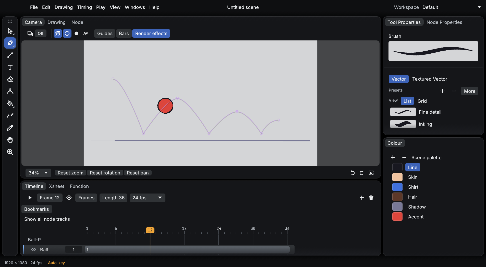
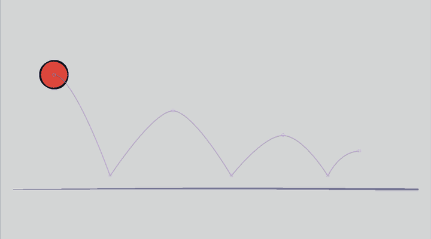
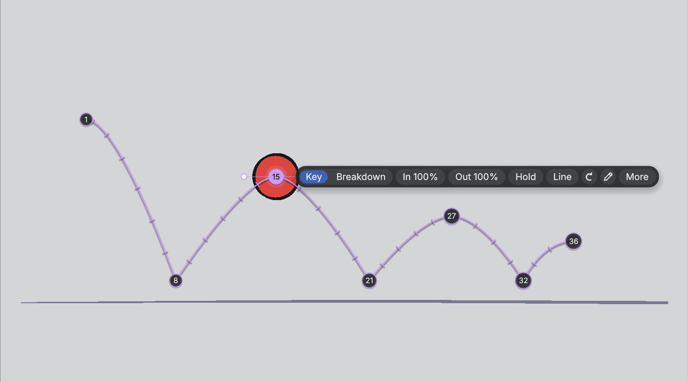
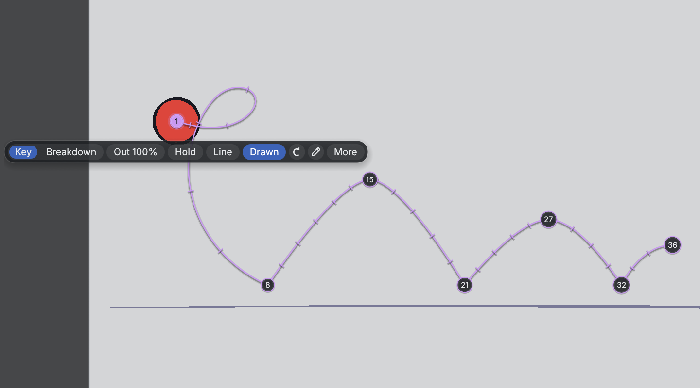
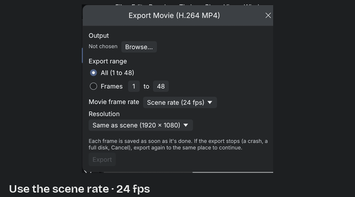

Symphony
Free, open-source 2D animation software. Draw frame by frame, time it on a Timeline or Xsheet, rig it, and composite it in nodes.
Get the preview build
Smart Charts: timing charts that move your artwork
Animators plan motion with timing charts: the path, the key poses, a tick for every frame. In Symphony the chart lives on the canvas and drives the layer, so you change the timing by moving ticks instead of retyping keys.
- Chart it, then let the layer follow
-
On each key frame, click where the artwork is. A path runs through the points with a tick for every frame: close ticks are slow, far-apart ticks are fast. Tick follows this chart and the layer’s peg rides it, turning and scaling with it unless you switch that off.

- Shape the spacing where you see it
-
On a point’s frame, a small bar sits beside it: Key or Breakdown, slow In and Out, Hold, and Line for a straight stretch. Slide any tick along the path to change where the chart is on that frame. Each chart gets its own colour, in the same order in every scene.

- Draw the path, and its timing with it
-
Turn on the pencil and draw from one point to the next. Symphony smooths the stroke and fits it with as few clean curves as it needs, joining the curves on either side without a corner. Turn on Timing too, and the speed you drew at becomes the spacing.

- Keys where the chart is
- In the Symphony profile, while a chart is edited, Shift+B switches a point between key and breakdown, Shift+H holds, [ and ] move the whole chart a frame earlier or later, and the arrows nudge the point. Drag the chart’s bar on the Timeline to retime all of it, and Insert in-betweens stretches it with the scene. Charts never appear in exports.
More you won’t find elsewhere
- Tab Search, and keys that fit the panel
-
Press Tab and type what you want: an action, a node to add, a layer, a colour, a brush, a page of the manual, or “insert 3 frames”. Results for the panel you’re in come first, and you can remap any shortcut from there. In the Symphony profile, one letter does the right thing for the panel under the pointer: D is the Dropper over a drawing and Duplicate Drawing over the Timeline. Prefer Harmony’s own shortcuts? Switch to the Harmony profile.

- Your brushes, as editable lines
-
Import brushes from Photoshop, Krita, MyPaint, Procreate, Clip Studio Paint and GIMP. They become Textured Vector brushes: the tip’s texture on a line you can still move, reshape and recolour. Shown with Ramón Miranda’s Sketch V2 for Krita 5.

- Rigs that keep feet planted
-
Build a skeleton in its own setup view, then pose it in Camera. Lock a hand or foot with an anchor, aim a limb at a target, make a two-bone smart joint, and flip which way an elbow bends. Vector artwork bends at the joints.

- Make room for in-betweens
-
Insert frames after the playhead across the whole scene. Drawings hold through the gap, and later exposures, keys, bookmarks and Smart Charts move together.

- Bend a line as you draw
-
Hold Alt while drawing with the Line tool to bend the stroke between its ends. Hold Shift to snap the angle to 22.5° steps.

- Untangle a node graph
-
Arrange Nodes lays the graph out by signal flow. Select a node to light up its cables, or drag it and nearby cards slide out of the way. Alt-drag a node onto a cable to insert it.

- Deliver at another frame rate
-
Animate at the scene’s rate and export the movie at a different one. Symphony samples the timing so the shot keeps its length. If an export is interrupted, run it again and it reuses the finished frames.



- Sketch art layer. Rough construction under the line and colour art, faint while you ink, left out of exports unless you include it.
- Cutter. Split strokes and fills along a lasso and move the pieces inside.
- Onion-skin alignment. Slide or turn the previous and next drawings to compare poses that moved across the screen.
- Mesh Warp by points. Pin points on the artwork and bend it as rigidly as it can, moving only what’s connected.
- Timeline bookmarks. Name a frame or a range, colour it, add notes, and jump there from Search.
- A manual inside the app. Help → Manual, or search any topic with Tab. The same pages are on the web.
The essentials, the way Harmony does them
Harmony habits carry over, and a Harmony shortcut profile follows Harmony 27’s published defaults.
- Camera, Drawing, Timeline, Xsheet, Node and Function views in workspaces you rearrange
- Vector Brush, Pencil, Line, Text and Eraser with pen pressure and tilt (macOS today)
- Line Art and Colour Art, with Overlay and Underlay if you want them
- Palettes linked by colour: edit a swatch and every stroke and fill using it changes
- Paint, Paint Unpainted, Repaint and Unpaint, Close Gap and protected colours
- Exposures, holds, drawing substitution, clones and onion skin
- Pegs with keys and Bézier, linear or stop-motion curves
- Multiplane depth with a 3D View and camera moves
- Masks, blurs, grain and 20 blend modes in the node graph
- Import of PSD, Krita, OpenRaster, SVG, image sequences, video and sound
- Export to GIF, PNG sequence and H.264 movie
- Autosave every two minutes, with recovery after a crash
What’s coming
- Draw on your tablet. Use an iPad with Apple Pencil or an Android tablet with S Pen as a drawing surface and control panel for Symphony, over your own network.
- Tracking built on Smart Charts. Charts that guide in-betweening, texture and lighting.
- Pressure on Windows and Linux. Windows Ink, Wintab, Wayland and X11.
- More of Harmony. The Ink tool, gradients, the Library, more deformers and effects, scripting.